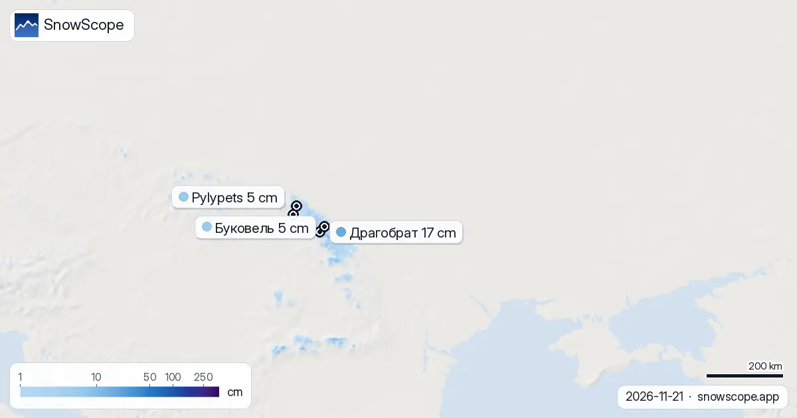
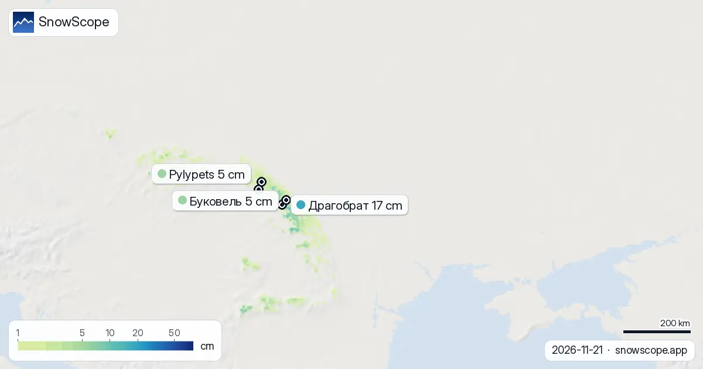

Карпати України набрали 3 080 км² снігового покриву за тиждень
Гірськолижні гори України змінилися за тиждень. Снігове покриття зросло на 3 080 км² з приходом холодного повітря, а найвищі вершини тепер накопичують значні запаси води на початку зимового сезону.
Дивіться сніговий прогноз для Драгобрат у застосунку SnowScopeВисота снігу, сповіщення та 3D-карта, безкоштовно.Драгобрат лідирує серед українських курортів
Драгобрат випереджає всі українські курорти з глибиною снігу 17 см та 19 см свіжого снігу за останні 72 години. Це свідчить, що найвищі вершини—вище 1 500 м—починають правильно накопичувати воду. Карпатський хребет пробуджується.
З 20 відстежуваних курортів лише 9 мають вимірний сніг на землі сьогодні. Решта залишаються без снігу. Але закономірність ясна: висота має значення. Де гори піднімаються вище 1 500 м, сніг накопичується. Де вони залишаються нижчими, земля все ще здебільшого темна.
| Day | White area | Most new snow in 3 days | Deepest resort |
|---|---|---|---|
| понеділок, 16 листопада | 1 650 km² | 2 cm | Гірськолижний комплекс "Плай" |
| вівторок, 17 листопада | 2 360 km² | 6 cm | Драгобрат |
| середа, 18 листопада | 430 km² | 6 cm | Pylypets |
| четвер, 19 листопада | 370 km² | 5 cm | Драгобрат |
| пʼятниця, 20 листопада | 1 100 km² | 7 cm | Драгобрат |
| субота, 21 листопада | 9 120 km² | 14 cm | Драгобрат |

За тиждень усе змінилося
Сім днів тому лише 6 040 км² гірськолижної місцевості України мали снігове покриття. Сьогодні це 9 120 км². Стрибок на 3 080 км² за тиждень позначає перехід від осені до зими. Вчора само по собі додало 8 440 км², спричинене масштабним снігопадом по всьому хребту.
Найвищий гірський пояс—вище 1 500 м—тепер повністю вкритий снігом. Середній пояс, між 1 000 та 1 500 м, також досяг 100% покриття з середньою глибиною 3 см. Лише нижче 1 000 м сніг розташований вибірково, охоплюючи лише 34% нижніх схилів.

Вологий пояс швидко потовщується
Між 1 500 та 2 000 м наша модель оцінює середню глибину 12 см. Це зона, де вода накопичується на породах та живить джерела, потоки й водосховища під час зимового та весняного танення. Ці 12 см являють собою запас води—не глибокий, але реальний.
Снігова лінія сьогодні знаходиться на висоті 800 м. Дощ та танення переважають нижче цієї висоти, тому зимовий стік буде мінімальним на низьких висотах. Але найвищі вершини тепер зберігають припаси води сезону в твердому вигляді, де вони залишатимуться холодними до кінця весни.
Чорногора та Горгани показують найстрімкіший ріст
За останні 72 години виділяються три гарячі точки. Чорногора отримала 21 см нового снігу, Горгани—20 см, а хребет Боржава—13 см. Ці масиви вищі та холодніші—вони отримали найбільше від недавніх штормів. Чорногора та Горгани—це місця, де сніг буде накопичуватися найшвидше протягом наступного тижня.
Драгобрат, розташований на висоті 1 706 м у комплексі Чорногори, відображає цю перевагу. Його 19 см нового снігу за 72 години ставить його першим серед гірськолижних курортів. Нижчі курорти, такі як Буковель (1 370 м) та Пилипець (1 165 м), отримали лише 8 см та 6 см відповідно, тому що вони розташовані там, де повітря теплише.
Прогнозується більше снігу—багато
На наступні три дні наша модель прогнозує до 13 см нового снігу по гірськолижній місцевості. 23 листопада буде найвологішим днем з 7 см падіння. До наступного тижня прогноз розширюється до 17 см загального нового снігу протягом сьомого дня.
Це має значення для накопичення води. Кожен сантиметр снігу на найвищих вершинах—це вода, захована від випаровування. На початку грудня, якщо прогноз збудеться, пояс 1 500–2 000 м легко може подвоїти свою поточну середню глибину 12 см. Це буде значимо для весняного танення.
Погляд зі схилів
Сьогодні 52% українських гірськолижних схилів—на карті, що охоплюється,—білі. Це різке зміщення від розпорошених плям тижня назад. Для гірськолижників це означає, що високі гори тепер придатні для катання на їх верхніх ділянках, хоча нижні схили залишаються тонкими або оголеними.
17 см Драгобрату—достатньо для катання на верхній вершині. Буковель та Пилипець, обидва нижче 6 см, все ще стикаються з тонким покриттям та небезпекою скель. До 24 листопада свіжий сніг повинен додати 1–2 см до нижніх курортів, але гори вище 1 500 м залишатимуться в центрі уваги протягом цього періоду. Перевірте офіційний лавинний бюлетень перед катанням поза трасою.
Поради лижникам
- Катайтеся вище 1 500 м, де глибина снігу тепер перевищує 10 см. Нижче 1 000 м лише 34% схилів вкрито; скелі залишаються небезпекою.
- Драгобрат та курорти в масиві Чорногори мають найбільше снігу сьогодні. Нижчі площі, такі як Славське (2–3 см), поки що не придатні для катання.
- Очікуйте ще 13 см снігу протягом наступних трьох днів. До 23 листопада нижчі курорти можуть отримати 2–3 см і стати більш придатними для катання.
- Снігова лінія знаходиться на висоті 800 м; очікуйте дощ нижче цієї висоти. Будь-який стік води стікатиме в долини, а не накопичуватиметься як сніг.
- Якщо ви йдете поза трасою, проконсультуйтеся з офіційним лавинним бюлетенем. Раннього сезону сніг на крутих схилах може зійти на голу скелю під ним.
About these numbers
Resort snow depths are the deepest snow on the resort's upper slopes on the date shown; they are estimates for an area, not a measurement at one point. Forecasts can change. Always read the official avalanche bulletin before going off-piste.
Cite this report
For research, teaching or the press: the numbers and charts are free to reuse under CC BY 4.0 with this citation.
SnowScope (2026), Карпати України набрали 3 080 км² снігового покриву за тиждень, https://snowscope.app/blog/uk/2026/11/ukraine-snow-cover-gain-this-week-21-november-2026.html, accessed 2026-11-21
SnowScope (Atlas Labs). (2026, November 21). Карпати України набрали 3 080 км² снігового покриву за тиждень. SnowScope snow reports. https://snowscope.app/blog/uk/2026/11/ukraine-snow-cover-gain-this-week-21-november-2026.html
BibTeX
@misc{snowscope2026ukrainesnowcovergainthis,
author = {{SnowScope (Atlas Labs)}},
title = {Карпати України набрали 3 080 км² снігового покриву за тиждень},
year = {2026},
month = nov,
howpublished = {\url{https://snowscope.app/blog/uk/2026/11/ukraine-snow-cover-gain-this-week-21-november-2026.html}},
note = {Published 2026-11-21 13:46 UTC; accessed 2026-11-21}
}· CC BY 4.0 · Methods, data and tools →
Драгобрат: snow and temperature by height, this winter vs last (tools) →
Follow Драгобрат
Безкоштовно: повідомлення, коли йде новий сніг, і прогноз щоранку.